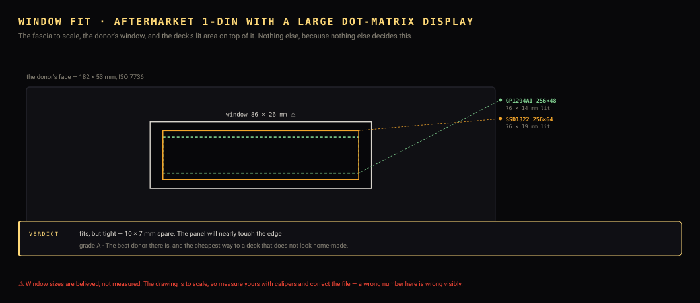

Choose a donor. You are buying a box, a face, a cage and a bag of buttons — so buy a broken one.
The chassis comes from a scrap head unit — buy a broken one
You are buying a box, a face, a cage and a bag of buttons.
The CD mechanism, the amplifier, the tuner and the microcontroller all go in the
bin on the first evening — so a jammed unit at £8 is worth as much to you as a
working one at £40. A working CD mechanism is the biggest driver of price on a
listing and the first thing you remove.

The window decides it, and nothing else comes close. Everything
else about a donor is recoverable — shim the chassis, rewire the buttons, swap
the knob. The window cannot be: it is a hole in the one part you chose the
donor for. So each family gets this drawing, to scale, and a verdict reporting
the shortfall in millimetres — “needs 3 mm” is a filing job, “needs
24 mm” is a different donor.